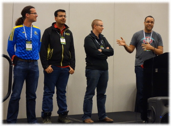

DAX on BTT
In the final plenary session of the 2016 Linux Storage, Filesystem, and Memory-Management Summit, much of the team that works on the DAX direct-access mechanism led a discussion on how DAX should interact with the block translation table (BTT)—a mechanism aimed at making persistent memory have the atomic sector-write properties that users expect from block devices. Dan Williams took the role of ringleader, but Matthew Wilcox, Vishal Verma, and Ross Zwisler were also on-stage to participate.
Williams noted that Microsoft has adopted DAX for persistent memory and is even calling it DAX. Wilcox said that it was an indication that Microsoft is "listening to customers; they've changed".

BTT is a way to put block-layer-like semantics onto persistent memory, which handles writes at a cache-line granularity (i.e. 64 bytes), so that 512-byte (sector) writes are atomic. This eliminates the problem of "sector tearing", where a power or other failure causes a partial write to a sector resulting in a mixture of old and new data—a situation that applications (or filesystems) are probably not prepared to handle. Microsoft supports DAX on both BTT and non-BTT block devices, while Linux only supports it for non-BTT devices. Williams asked: "should we follow them [Microsoft] down that rabbit hole?"
The problem is that BTT is meant to fix a problem where persistent memory is treated like a block device, which is not what DAX is aimed at. Using BTT only for filesystem metadata might be one approach, Zwisler said. But Ric Wheeler noted that filesystems already put a lot of work into checksumming metadata, so using BTT for that would make things much slower for little or no gain.
Jeff Moyer pointed out that sector tearing can happen on block devices like SSDs, which is not what users expect. Joel Becker suggested that something like the SCSI atomic write command could be used by filesystems or applications that are concerned about torn sectors. That command guarantees that the sector is either written in full or not at all. There is no way to "magically save applications from torn sectors" unless they take some kind of precaution, he said.
There is a bit of a "hidden agenda" in supporting BTT, though, Williams said. Currently, the drivers are not aware of when DAX mappings are established and torn down, but that would change for BTT support. Wilcox said he has a patch series that addresses some parts of that by making the radix tree the source for that information.
| Index entries for this article | |
|---|---|
| Kernel | DAX |
| Kernel | Memory management/Nonvolatile memory |
| Conference | Storage, Filesystem, and Memory-Management Summit/2016 |
Posted May 5, 2016 20:38 UTC (Thu)
by phro (subscriber, #29295)
[Link] (6 responses)
The real issue is that DAX and the BTT are incompatible. If you want to use DAX, you have to give up sector atomicity. If applications truly depend on that, then they can't run unmodified on a pmem device mounted with -o dax. That means that you would have to separate out your pmem mount points into those that will support legacy applications and those that will only support DAX. By combining the two, you get the best of both worlds.
I got the overwhelming impression that the room was not convinced that applications should rely on atomic sector updates. Such applications are broken and should be fixed. Thus, there is little impetus to support the mixed DAX+BTT mode that was proposed.
[1] http://research.cs.wisc.edu/wind/Publications/alice-osdi1...
Posted May 5, 2016 21:11 UTC (Thu)
by stellarhopper (subscriber, #84666)
[Link] (1 responses)
Posted May 6, 2016 14:48 UTC (Fri)
by phro (subscriber, #29295)
[Link]
Posted May 6, 2016 0:00 UTC (Fri)
by neilbrown (subscriber, #359)
[Link] (3 responses)
citation needed.
My model of traditional storage includes a ECC for each block. So the options for a read after an aborted write are:
How can you get a torn sector?
Posted May 6, 2016 0:15 UTC (Fri)
by andresfreund (subscriber, #69562)
[Link] (1 responses)
Posted May 8, 2016 13:39 UTC (Sun)
by robbe (guest, #16131)
[Link]
FWIW, ECC does not guarantee detection of errors. I don’t know what the distance of the code used for your disk is (are these values universal?), so I can’t tell what the probability of an undetected error is.
Posted May 6, 2016 14:50 UTC (Fri)
by phro (subscriber, #29295)
[Link]
> citation needed.
I suppose "never" is a strong word. What I meant to say was that the SCSI and ATA standards did not say anything about power-fail write atomicity of a single sector. Because they did not standardize it, you cannot rely on it.
DAX on BTT
DAX on BTT
DAX on BTT
DAX on BTT
- old data
- new data
- read error (ECC reports an uncorrectable error)
DAX on BTT
DAX on BTT
DAX on BTT